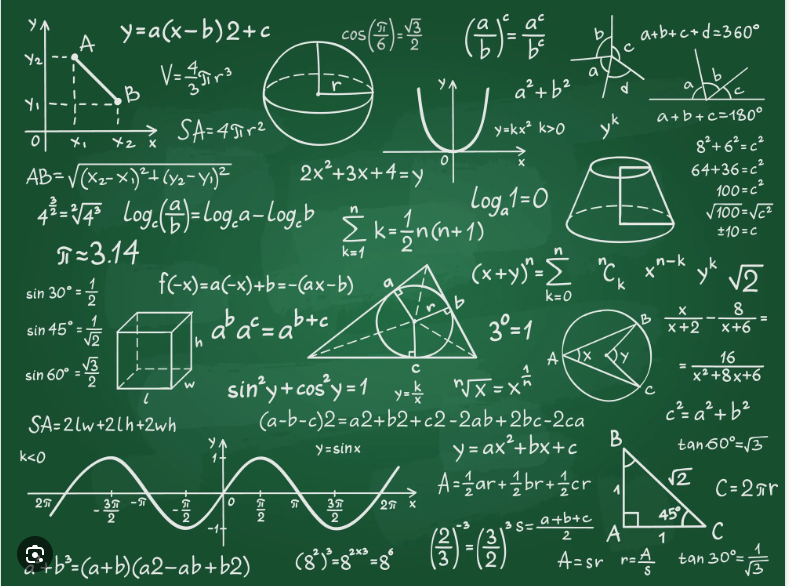
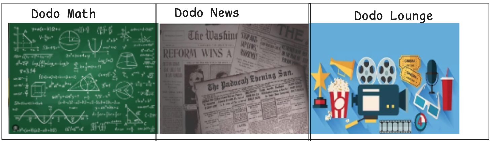

Dodo Math Math quizzes, math marketplace
Dodo News News, newspaper marketplace
Dodo Lounge Games, shows, credit card
Only if you are in the Dodo club ™
To get a Dodo credit card you must pay 10 Dodo bucks
Give those 10 Dodo bucks to Dodo employee and ask for a credit card.We decide league by how many Dodo bucks you have.
1-5=Iron
5-10=Bronze
10-15=Silver
15-20=Gold
20-25=Platinum
25-30=Emerald
30-35=Diamond
+35=God
Dodo easy join| June 9th
A.R.C. pizza party with winners of A.R.C. and Dodo members| Unknown
Cricket with Dodo members| June 19th